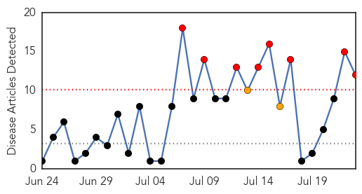

West Nile Virus
30-Day Web Trend
8 alerts, 2 warnings

30-Day Twitter Trend
0 alerts, 0 warnings

Article Locations

Article Confidences

Top Articles:
- 0.997
- Mosquitoes Test Positive For West Nile Virus In Boulder
- 0.978
- West Nile virus discovered in Edwardsville
- 0.970
- West Nile virus detected in Sioux Falls
- 0.968
- DCHHS Confirms First Human Case In Summer
- 0.958
- Drought Makes California A Breeding Ground For West Nile Virus
- 0.958
- First human case of West Nile virus reported
- 0.957
- West Nile virus detected in Umatilla County
- 0.949
- West Nile virus activity reported in Utah
- 0.929
- How The City Battles The West Nile Virus
- 0.892
- West Nile-Positive Mosquitoes Found in Plainfield
- 0.885
- California Confirms First West Nile Virus Death of Year
- 0.835
- Mosquitoes test positive for West Nile in Lake County
Top Tweets:
-
No tweets found for Jul 23, 2015
MERS
30-Day Web Trend
0 alerts, 0 warnings

30-Day Twitter Trend
0 alerts, 0 warnings

Article Locations

Article Confidences

Top Articles:
Top Tweets:
- 0.661
- AFD Blog `Saudi MOH: 2 More MERS Cases In Riyadh (1 Fatal)' MERS-CoV http://t.co/3FmFdW0dKx
- 0.646
- AFD Blog `Saudi MOH Announces 2 MERS Cases' MERS-CoV http://t.co/TR7YKdX6VD